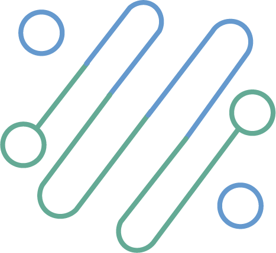

<ion-header class="topHeader">
  <ion-toolbar slot="start">
    <div class="column left">
      <div class="mainTitle">
        
      </div>
      <div class="version">v {{version}}</div>
    </div>
    <div class="column middle">
      <ion-title>{{coreName}}</ion-title>
      <!-- <div class="doorsButton-toggle" *ngIf="remote">
        <ion-label (click)="toggleButtons()">
          {{btnVisible ? 'Ocultar' : 'Visualizar'}}</ion-label
        >
        <ion-icon
          [name]="btnVisible ? 'chevron-up-outline' : 'chevron-down-outline'"
          (click)="toggleButtons()"
          style="padding-left: 5px"
        ></ion-icon>
      </div> -->
    </div>
    <div class="column right">
      <!-- <span [hidden] = "MyRole != 'admin'" > -->
      <span>
        <ion-buttons slot="end" id="popover-button">
          <ion-menu-button autoHide="false"></ion-menu-button>
        </ion-buttons>
      </span>
    </div>
  </ion-toolbar>
</ion-header>

<ion-content>
  <!-- Popover Menu---------------------------- -->
  <ion-popover trigger="popover-button" [dismissOnSelect]="true" mode="ios">
    <ng-template>
      <ion-content>
        <ion-list>
          <ion-item-group *ngIf="MyRole == 'admin'">
            <ion-item [button]="true" [detail]="false" (click)="openFamily()"
              >Familia</ion-item
            >
            <ion-item
              [button]="true"
              [detail]="false"
              (click)="recoverAccount()"
              >Recupera cuenta</ion-item
            >
            <ion-item [button]="true" [detail]="false" (click)="deviceLost()"
              >Celular perdido</ion-item
            >
            <ion-item
              [button]="true"
              [detail]="false"
              (click)="localNotification()"
              >Local notification</ion-item
            >
            <ion-item
              [button]="true"
              [detail]="false"
              (click)="fcmNotification()"
              >FCM notification</ion-item
            >
            <ion-item class="wrap-input">
              <ion-toggle
                id="twilioToggle"
                class="ion-toggle-red"
                labelPlacement="start"
                [(ngModel)]="demoMode"
                (ionChange)="DemoMode()"
                >Demo mode
              </ion-toggle>
            </ion-item>
          </ion-item-group>
          <ion-item-group
            *ngIf="MyRole == 'neighborAdmin' || MyRole == 'admin'"
          >
            <ion-item
              id="logout1-alert"
              [button]="true"
              [detail]="false"
              (click)="modalBackstage()"
              >Agregar usuario
              <ion-icon
                slot="end"
                name="person-add-outline"
                (click)="modalBackstage()"
              >
              </ion-icon>
            </ion-item>
            <ion-item
              id="logout1-alert"
              [button]="true"
              [detail]="false"
              (click)="ModalUsers()"
              >Cambios a usuario
              <ion-icon
                slot="end"
                name="person-circle-outline"
                (click)="ModalUsers()"
              >
              </ion-icon>
            </ion-item>
          </ion-item-group>
          <ion-item-group>
            <ion-item
              id="logout1-alert"
              [button]="true"
              [detail]="false"
              *ngIf="remote"
              (click)="toggleButtons()"
              >{{titleMenuButtons}}
              <ion-icon
                slot="end"
                name="toggle-outline"
                (click)="toggleButtons()"
              >
              </ion-icon>
            </ion-item>
            <ion-item
              id="logout1-alert"
              *ngIf="MyRole == 'admin'"
              [button]="true"
              [detail]="false"
              (click)="logout()"
            >
              <div class="logged">Cerrar sesion: {{myEmail}}</div>
            </ion-item>

            <ion-item
              id="logout1-alert"
              *ngIf="MyRole != 'admin'"
              [button]="true"
              [detail]="false"
              (click)="comentar()"
            >
              <div class="logged">Comenta sobre la aplicacion</div>
            </ion-item>

            <ion-item
              id="logout1-alert"
              *ngIf="MyRole != 'admin'"
              [button]="true"
              [detail]="false"
              (click)="logout()"
            >
              <div class="logged">Cerrar sesion: {{myName}}</div>
            </ion-item>
          </ion-item-group>
        </ion-list>
      </ion-content>
    </ng-template>
  </ion-popover>

  <!-- --------------------------------------------  -->

  <!-- Bi-color -->
  <div slot="fixed" class="aperturas" *ngIf="btnVisible && remote">
    <ion-button
      class="doorsButton-green"
      (click)="sendSMS('peatonal')"
      mode="ios"
      >Peatonal</ion-button
    >
    <ion-button
      class="doorsButton-blue"
      (click)="sendSMS('vehicular')"
      mode="ios"
      >Vehicular</ion-button
    >
  </div>

  <ion-refresher slot="fixed" (ionRefresh)="doRefresh($event)">
    <ion-refresher-content> </ion-refresher-content>
  </ion-refresher>

  <div id="infoSection" class="info">
    <!-- <ion-card class="" *ngFor="let item of localInfo; let i = index;"> -->
    <ion-card class="" *ngFor="let item of localInfo; index as i">
      <ion-card-header>
        <ion-card-title>{{item.title}}</ion-card-title>
        <ion-card-subtitle>{{item.createdAt}}</ion-card-subtitle>
      </ion-card-header>
      <ion-card-content class="" (click)="openUrl(item.url)">
        
        <p>{{item.description}}</p>
      </ion-card-content>
    </ion-card>
  </div>

  <!-- fab placed to the bottom end -->
  <!-- <ion-fab  vertical="bottom" horizontal="end" slot="fixed"> -->

  <ion-fab slot="fixed" vertical="center" horizontal="end">
    <ion-fab-button class="button-green">
      <ion-icon name="add"></ion-icon>
    </ion-fab-button>
    <ion-fab-list side="top">
      <ion-fab-button class="button-green" (click)="newVisitor()">
        <ion-icon name="person-outline"></ion-icon>
      </ion-fab-button>

      <ion-fab-button class="button-green" (click)="ModalUsers()">
        <ion-icon name="lock-closed-outline"></ion-icon>
      </ion-fab-button>
    </ion-fab-list>
  </ion-fab>
</ion-content>
